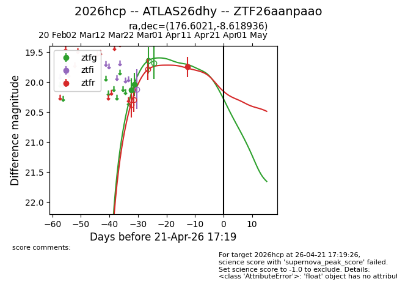
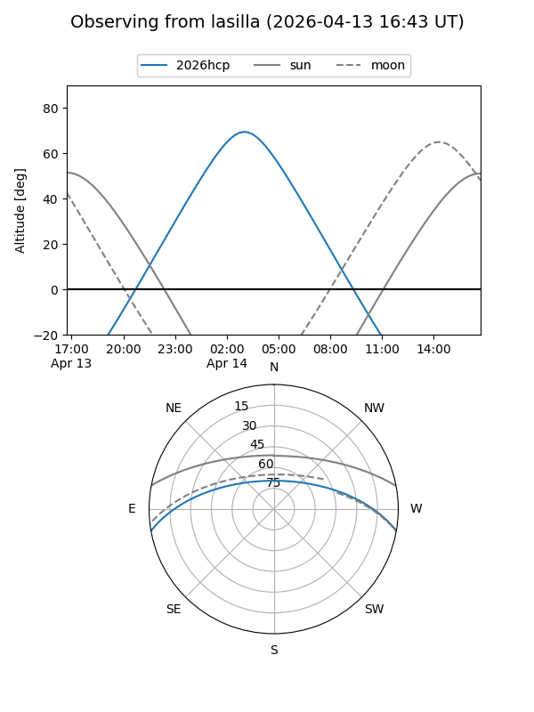
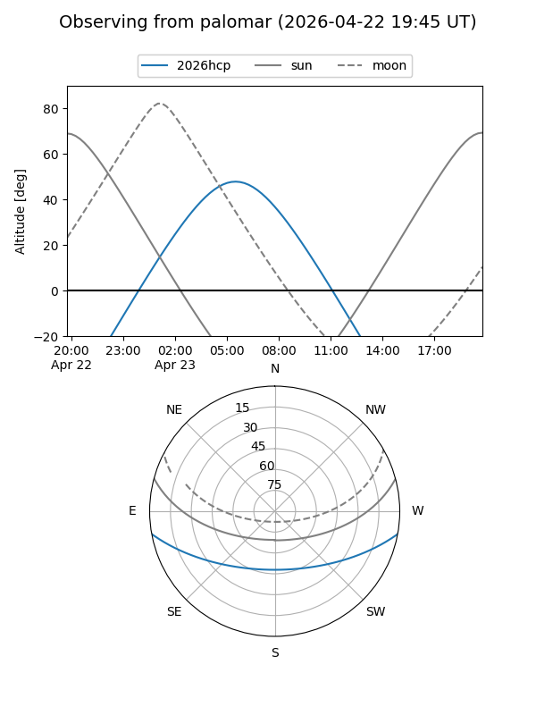
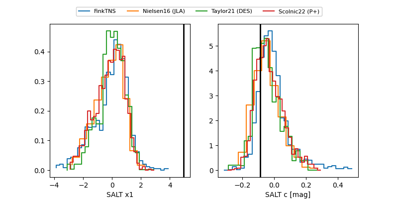

2026hcp
Target 2026hcp at 2026-04-21 17:24
Aliases and brokers:
FINK: link
Lasair: link
ALeRCE: link
TNS: link
YSE: link
alt names
ZTF26aanpaao (ztf,fink_ztf)
2026hcp (tns,yse)
ATLAS26dhy (atlas)
Coordinates:
equatorial (ra, dec) = 176.6021,-8.61894
equatorial (HMS+DMS) = 11:46:24.50,-08:37:08.17
galactic (l, b) = (276.8792,+50.93370)
Flags:
Photometry:
last ztfg=20.04, ztfr=19.74
2 ztfg, 1 ztfr detections
Lightcurve

Visibility


Additional plots
